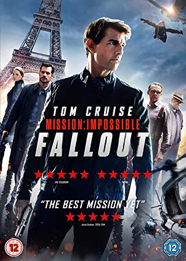
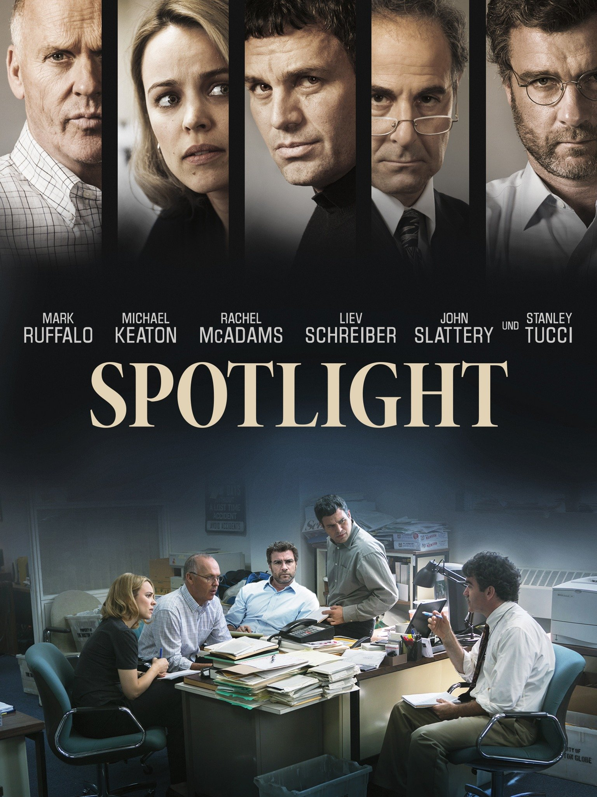
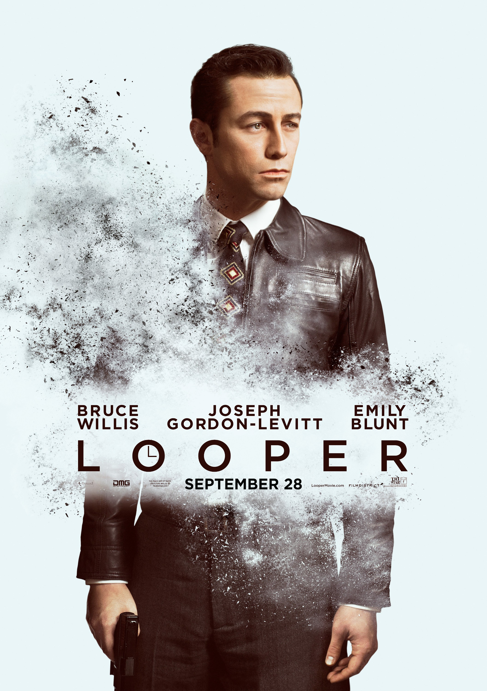
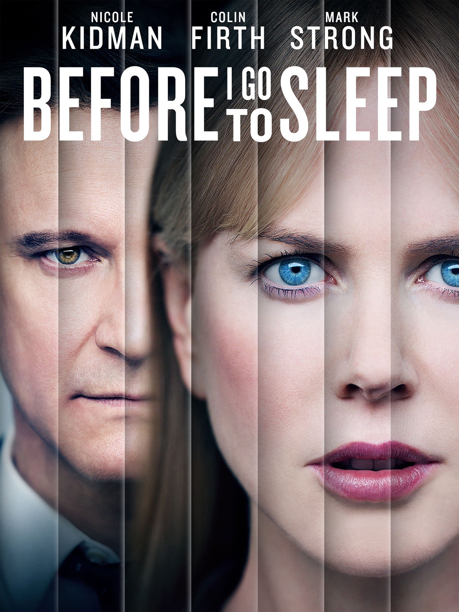
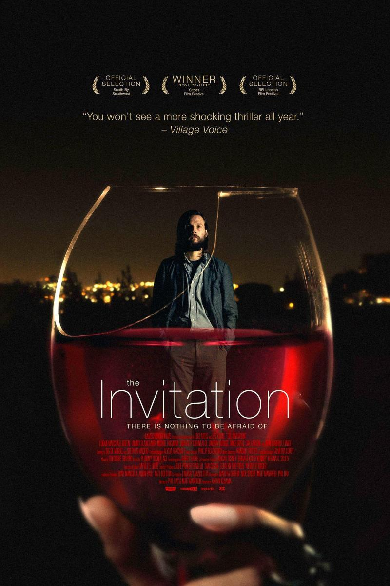

Now that Chris and his girlfriend, Rose, have reached the meet-the-parents milestone of dating, she invites him for a weekend getaway with Missy and Dean. At first, Chris reads the family's overly accommodating behavior as nervous attempts to deal with their daughter's interracial relationship, but as the weekend progresses, a series of increasingly disturbing discoveries leads him to a truth that he never could have imagined.
Mission Impossible

Star Rating
Ethan Hunt and the IMF team join forces with CIA assassin August Walker to prevent a disaster of epic proportions. Arms dealer John Lark and a group of terrorists known as the Apostles plan to use three plutonium cores for a simultaneous nuclear attack on the Vatican, Jerusalem and Mecca, Saudi Arabia. When the weapons go missing, Ethan and his crew find themselves in a desperate race against time to prevent them from falling into the wrong hands.
Spotlight

Star Rating
In 2001, editor Marty Baron of The Boston Globe assigns a team of journalists to investigate allegations against John Geoghan, an unfrocked priest accused of molesting more than 80 boys. Led by editor Walter "Robby" Robinson (Michael Keaton), reporters Michael Rezendes (Mark Ruffalo), Matt Carroll and Sacha Pfeiffer interview victims and try to unseal sensitive documents. The reporters make it their mission to provide proof of a cover-up of sexual abuse within the Roman Catholic Church.
Arrival
Star Rating
Linguistics professor Louise Banks (Amy Adams) leads an elite team of investigators when gigantic spaceships touch down in 12 locations around the world. As nations teeter on the verge of global war, Banks and her crew must race against time to find a way to communicate with the extraterrestrial visitors. Hoping to unravel the mystery, she takes a chance that could threaten her life and quite possibly all of mankind.
Gone Girl
Star Rating
In Carthage, Mo., former New York-based writer Nick Dunne (Ben Affleck) and his glamorous wife Amy (Rosamund Pike) present a portrait of a blissful marriage to the public. However, when Amy goes missing on the couple's fifth wedding anniversary, Nick becomes the prime suspect in her disappearance. The resulting police pressure and media frenzy cause the Dunnes' image of a happy union to crumble, leading to tantalizing questions about who Nick and Amy truly are.
Looper

Star Rating
In a future society, time-travel exists, but it's only available to those with the means to pay for it on the black market. When the mob wants to eliminate someone, it sends the target into the past, where a hit man known as a looper lies in wait to finish the job. Joe (Joseph Gordon-Levitt) is one such hired gun, and he does his job well -- until the day his bosses decide to "close the loop" and send Joe's future self (Bruce Willis) back in time to be killed.
Knives Out
Star Rating
Combine a mysterious death with a multimillion-dollar inheritance, and drama is bound to ensue. This comedic take on the classic whodunit follows an extremely dysfunctional wealthy family vying for their share of patriarch Harlan Thrombey’s money. When an anonymous member of the family hires Detective Benoit Blanc (Daniel Craig) to figure out who’s responsible for the death of Harlan, things escalate even further in this thriller.
Before I Go to Sleep

Star Rating
Christine Lucas (Nicole Kidman) is unable to remember her life due to amnesia brought on by a violent attack. Because of this, she wakes up every morning with no memories and has to remeet everyone she knows, including her husband. Before long, she finds herself questioning everything about her past.
The Girl on the Train
Star Rating
Emily Blunt is mesmerizing as Rachel Watson, a struggling alcoholic reeling after the loss of her job and marriage. Instead of trying to move on, she rides in and out of Manhattan on a commuter train and spends her time obsessing over her ex-husband, Tom (Justin Theroux), and his new wife, Anna (Rebecca Ferguson). After Anna and Tom’s nanny, Megan (Haley Bennett) disappears, all eyes turn to Rachel because she was spotted in the vicinity. The problem is Rachel can’t remember anything.
The Invitation

Star Rating
A man returns to his former home—where his ex-wife now lives with her new husband—to attend a seemingly normal dinner party. Things take a dangerous turn, though, when he starts to question the true intentions of the event. Moral of the story: Don’t accept invites from your ex.